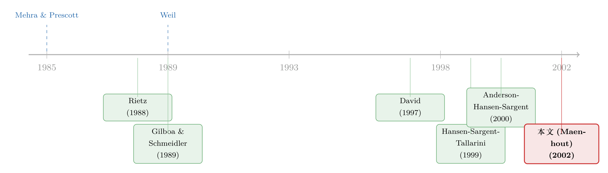

不信任自己的模型，于是他把最坏的剧本当了真
本文读的是 Maenhout (2002, Review of Financial Studies)——严格说，它不是一篇论文，而是一篇「讨论」（discussion），即一位评论人对同期刊上《Robustness and Pricing with Uncertain Growth》的逐条点评。它把「稳健性」（robustness）这条线讲得格外透：当投资者不再无条件相信自己的模型时，资产定价会多出一个新的「谨慎」来源——它能在不抬高无风险利率的前提下抬高股权溢价，从而绕开困扰高风险厌恶解法的「无风险利率之谜」。而评论人真正的价值，是把这套漂亮框架里还没拧紧的几颗螺丝一一指了出来。
1 一个老谜题，和一个不太一样的答案
先从一个所有人都熟悉的尴尬讲起。
Mehra 和 Prescott（1985）告诉我们，历史上美股相对无风险资产的超额收益高得离谱，用标准的期望效用模型去拟合，需要把风险厌恶系数调到一个谁也不相信的水平——这就是著名的股权溢价之谜（equity premium puzzle）。几十年来，人们想了无数办法，而几乎所有办法都绕不开同一个动作：让投资者「更怕风险」。
但「更怕风险」是要付代价的。Weil（1989）随即指出了第二个谜：你把风险厌恶调高，股权溢价是上去了，可无风险利率也被一起顶了上去，顶到了和数据严重不符的地步——这就是无风险利率之谜（risk-free rate puzzle）。换句话说，沿着「高风险厌恶」这条路走，你按下葫芦，浮起了瓢。
于是，一个自然的问题是：投资者那种「过分谨慎」的样子，一定得归因于怕风险吗？
被评论的这篇论文，连同 Hansen、Sargent 及其一众合作者发起的整条研究纲领，给出的回答是：不一定。投资者的谨慎，可能根本不是因为他怕「风险」（risk，概率已知的赌局），而是因为他不信任自己手里的那个模型——他怕的是 Knight 意义上的「不确定性」或「模糊」（Knightian uncertainty / ambiguity）。这是两种性质完全不同的谨慎。把后者请进模型，就是「稳健性」。
这条思路并不孤单。在本博客里，把「不相信自己的模型/估计」写进资产定价的尝试已经有好几条支流，比如《当投资者不再相信自己的模型：稳健性如何撑起股权溢价》、《算不准均值的那群人，悄悄退出了股市》 与《当你不再相信自己估出来的那个均值》。本文要读的，正是这条支流最早的源头之一。
2 什么叫「稳健」？——把决策交给一个最坏的剧本
稳健性的基本立意，评论人讲得很朴素：经济模型充其量是对现实的风格化近似（stylized approximation），而非分毫不差的描述。既然连建模的经济学家、计量学家自己都成天把「模型可能设定错了」挂在嘴边，那么模型里的经济主体，凭什么就该对模型有无限的信心？
于是，一个会「担心模型被设错」的主体，会怎么决策？他不会只盯着基准模型（baseline model）去优化，而会去考虑一组「与基准模型相近、但被悲观地扭曲过」的替代模型，让自己的决策规则不仅在基准模型成立时表现不错，在模型有点设定偏差时也别太难看。这就是「稳健」的含义。
接着，关键的一步来了：在这一整组替代模型里，该盯着哪一个？
这套文献的选择是——盯着最坏的那一个（worst-case / least-favorable model）。算法上，这个 maxmin 的过程可以被解读成决策者与一个虚构的、恶意的「大自然」（Nature）之间的零和博弈：你做你的最优选择，它则在「被允许的扭曲范围」内，挑一个对你最不利的模型来折磨你。
用稳健控制（robust control）的标准连续时间写法，这个目标可以写成下面这样（这里沿用 Anderson、Hansen 和 Sargent（2000）的乘子形式，\(h_t\) 是「大自然」对漂移项施加的�BD动扰动）：
这条方程是稳健控制的标准框架，不是这篇讨论里逐字给出的公式（讨论本身没有列方程）。我把它摆出来，是为了让 θ 这个参数的含义看得见：θ 是「对模型的信心」的倒数刻度。
注意这里 θ 的角色。\(\theta\to\infty\) 时，决策者对基准模型有无限信心，熵罚无穷大，「大自然」无法做任何扭曲——模型就退化回了标准的期望效用。θ 取有限值，则对应决策者对基准模型将信将疑、愿意认真对待一组被悲观扰动过的替代模型。
但「为什么偏偏盯最坏的那个」？为什么不走标准的贝叶斯路线，给每个模型派一个概率、把不确定性积分掉算了？评论人给出的辩护，来自 Gilboa 和 Schmeidler（1989）：他们用公理化的方式刻画了 maxmin 行为，其动机正是那些违反期望效用的观察——最有名的就是 Ellsberg 悖论。在这层意义上，θ 成了「（模型）不确定性厌恶」的度量：决策者根本无法给这些替代模型派概率，于是不确定性厌恶把他逼向了那个最不利的元素。这样一来，稳健性就和 Chen、Epstein（2001）关于「模糊厌恶」「多先验期望效用」的工作接上了头——它们都直接站在 Gilboa-Schmeidler 的肩膀上。
3 真正关键的一步：稳健性买到了什么
铺垫到这里，才能讲清楚被评论的那篇论文做了什么、以及为什么重要。
它把稳健性，放进了一个标准的连续时间随机增长生产经济里。这个经济有个要命的设定：生产率的平均增长率不可观测，代表性主体只能从生产率的水平观测中去反推它。增长率由两部分驱动——低频的「高增长/低增长」状态切换（regime switching），以及高频的布朗增量（Brownian increments）。主体通过一套合适的贝叶斯更新方案来学习这个均值，也就是非线性 Kalman 滤波（nonlinear Kalman filter）。光这一块，setup 就已经很像 David（1997）和 Veronesi（1999）的学习类工作了。
这篇论文真正的新意，是把「稳健性」和「带状态切换的滤波/学习」同时塞进同一个连续时间环境里——评论人明确说，这在方法论上是一个 nontrivial 的贡献。
而最漂亮的那个结果，是对 Hansen、Sargent、Tallarini（1999）「观测等价」（observational equivalence）结论的推广。它说的是：一个没有稳健性的经济，在宏观数量（消费、资本积累这些）上，竟然和一个有稳健性、但更「没耐心」（贴现率更高）的经济同构。直觉很顺：对模型设定的担忧，会增强预防性储蓄（precautionary savings）动机，让投资者多攒资本；而这恰好可以被「提高时间偏好率」给抵消掉。
这个结果的分量是双重的。
第一，它意味着引入稳健性，不会破坏标准宏观模型在数量上的预测——你不用担心一加稳健性，消费和投资的路径就面目全非了。
第二，也是更要命的一点：稳健性不一定会改变无风险利率，可它典型地会抬高均衡的股权溢价。
请把这两句话连起来读。它的言下之意是——基于稳健性的股权溢价解释，有办法避开 Weil（1989）的无风险利率之谜，而这恰恰是高风险厌恶解法做不到的。第 1 节那个「按下葫芦浮起瓢」的困境，在这里被绕开了。这就是稳健性在资产定价里最核心、最诱人的那份红利。
这份「红利」是有条件的。无风险利率在这个生产经济里由资本的边际产出决定，而稳健性增强的预防性储蓄会让资本存量随经济状态和信念波动——评论人后面会指出，这可能反过来让无风险利率反事实地过度波动。漂亮的故事，藏着一根刺。
于是，在解出社会计划者问题之后，论文算出了「影子风险溢价」。和 Anderson-Hansen-Sargent（2000）、Chen-Epstein（2001）、Maenhout（2001）一样，它得到一个 Breeden 型的消费 CAPM，其中均衡的夏普比率等于两块之和：
$$ \text{Sharpe ratio} \;=\; \underbrace{(\text{price of risk})}_{\text{标准那一块}} \;+\; \underbrace{(\text{price of model uncertainty})}_{\text{稳健性新加的一块}} $$
但这篇论文有一处独特：它的模型不确定性价格，是低增长状态后验概率的一个非线性函数。而这个后验概率会随时间剧烈变化——于是均衡股权溢价就随时间变动（time-varying）了。这正是把「稳健性」和「学习」捆在一起才能挤出来的东西：风险的价格，跟着投资者的信念一起呼吸。
「稳健的投资者随行情切换悲观/乐观的尺子」这条味道，后来被专门发展成了一支研究，见《悲观与乐观的浪潮：当「稳健」的投资者学会了随行情换尺子》。
最后，论文还引入了第二个布朗运动和一个盈利过程，去看模型对市盈率和股价波动率的预测。结论是诚实的：稳健性把预测改善了一些，但超额波动之谜（excess volatility puzzle）在很大程度上仍未被解释。
4 评论人真正的工作：指出还没拧紧的螺丝
读到这里你大概也明白了，一篇好的「讨论」，价值不在复述，而在它替整个领域问出那些作者来不及回答的问题。这一篇尤其好，我挑几颗最关键的螺丝。
第一颗，是 Kalman 滤波到底还「最优」不最优。 在传统学习模型里，「信号提取（学习）」和「最优动态选择（控制）」之间存在分离原理（separation），可以把问题大大简化。可一旦主体开始担心模型被设错，标准的非线性 Kalman 滤波是否仍然最优，就不再是显然的了。评论人指出，早期稳健控制文献（如基于 \(H_\infty\) 传统的 Tornell（2000））往往得不到滤波与控制的分离；而本文作者是在另一篇文章里专门攻下了这个分离原理——这本身是一项重要贡献，但它提醒我们：稳健 + 学习的组合，地基没有看上去那么自然。
第二颗，是 game I 和 game II 的区别，以及它的代价。 既然是 maxmin，就要追问：那个恶意的「大自然」，到底知道多少？增长率对决策者是不可观测的，但对「大自然」可能可知、也可能不可知——这正是两个博弈的分野。在 game II 里，「大自然」被赋予了相对决策者的信息优势，可以在挑最坏模型时盯着真实的增长状态来下手，模型设定误差由此变得状态依赖（state-dependent），稳健性也因此格外「凶猛」。代价是什么呢？评论人敏锐地点出：game I 存在一个完全信息的等价经济，而 game II 找不到这样的等价物——因为 game II 的本质是一种信息不对称，而任何完全信息经济里都不会有这种不对称。
第三颗，是那个绕不开的 θ 怎么校准。 任何带「模型不确定性」的建模，都要面对一个尴尬：你凭空多了一个自由的偏好参数 θ，若不把它牢牢钉住，模型就有沦为「不可证伪」的风险。论文借用了 Anderson-Hansen-Sargent（2000）的策略——用贝叶斯检测概率（detection probabilities）来约束 θ：即两个相近模型在统计上要多难被区分。但评论人指出，在本文（尤其 game II）的设定里这件事更难，图 4 里那些熵度量的相对大小也不好解读。他给出一个更「土」但更可感的替代思路：去看 θ 所隐含的最坏情形扭曲——比如在组合选择里，看它对股权溢价的悲观估计是否离谱（这正是 Maenhout（2001）判断 θ 是否可信的办法）。
第四颗，是那个被压在「红利」底下的刺。 第 3 节说稳健性能避开无风险利率之谜，可评论人提醒：在这个生产经济里，瞬时无风险利率由资本的边际产出决定，而稳健性增强的预防性储蓄动机会随经济状态和信念变化，资本存量随之起伏——于是人们有理由担心，无风险利率会反事实地过度波动。同理，那个随后验概率漂移的、随时间变动的风险价格，在量上甚至在定性上是否经得起数据检验，都还是开放的。
把这四颗螺丝放在一起看，你会发现评论人其实在传递一个克制的判断：这是一个方法论上很出色、把两条难线（稳健 + 滤波）首次焊到一起的框架，但它把宏观数量的成功，部分地建立在「观测等价」这种抵消之上，而它在二阶矩（波动率）和参数纪律（θ）上，还远没有交账。
5 文献脉络
把这条线捋一捋，会看得更清楚它从哪来、要往哪去。
最早是两个「谜」立住了靶子：Mehra 和 Prescott（1985）的股权溢价之谜，以及 Weil（1989）紧随其后的无风险利率之谜——后者像一道封印，堵死了「无脑调高风险厌恶」这条路。与此同时，决策理论这边，Gilboa 和 Schmeidler（1989）用 maxmin 期望效用的公理化，为「不给替代模型派概率」的行为提供了合法性，这是稳健性后来能立足的偏好基础。

接着，两条支流各自发育：一条是 Hansen、Sargent、Tallarini（1999）把稳健控制改造进宏观与定价，给出观测等价这把钥匙；Anderson、Hansen、Sargent（2000）则把它和「风险的价格」「检测概率」连了起来，Maenhout（2001）进一步算清了稳健经济里的均衡无风险利率与组合规则。另一条是 David（1997）、Veronesi（1999）的学习/滤波传统，让贴现率随信念波动。被评论的这篇论文，正坐在这两条支流的汇流处——它第一次把稳健性塞进一个带状态切换与滤波的经济，让「对模型的不信任」和「对增长率的学习」同时发生。而评论人顺手为它指了三个去处：用 Rietz（1988）式的「罕见而惨烈」的第三状态去做崩盘溢价（这正与本博客《罕见，所以可怕：把「算不准的概率」写进期权的微笑里》 的味道相通）、把框架推向衍生品定价、以及最难的那个——「对模型不确定性本身的学习」。
6 评论与延伸（Q&A + 研究方向）
(a) 几个可能的疑问
Q：稳健性（robustness）和单纯的「高风险厌恶」到底差在哪？
差在「怕什么」。高风险厌恶怕的是 risk——概率已知的赌局；稳健性怕的是 model misspecification——你连概率本身都不确定。两者在定价公式里都会抬高夏普比率，但稳健性多出来的那一块是「模型不确定性价格」，且关键是它不必像高风险厌恶那样把无风险利率一起顶上去，从而避开 Weil（1989）之谜。
Q：盯「最坏情形」是不是太极端、太悲观了？
评论人也觉得 drastic，但给了两层辩护。其一，最坏模型不是任意的，它是从一组「与基准足够接近」（用熵/似然度量距离）的模型里内生选出的，θ 控制了这个集合能放多宽。其二，Gilboa-Schmeidler（1989）证明，maxmin 正是「无法对替代模型派概率」的不确定性厌恶者的理性表现——它有公理基础，不是拍脑袋。
Q：观测等价（observational equivalence）听起来太巧了，是不是反而说明稳健性「没用」？
不是。它说的是稳健性在宏观数量上可被「更没耐心」抵消，但在资产价格上不可——稳健性会抬高股权溢价却不抬高无风险利率。换句话说，稳健性的指纹专门留在风险溢价上，而不在消费/投资路径上，这恰恰是它作为定价机制的卖点，而非缺陷。
Q：game II 给「大自然」开了信息外挂，这公平吗？会不会是在偷偷塞进识别力？
这正是评论人盯住的点。game II 让 Nature 能看着真实增长状态下手，模型误差变成状态依赖，稳健性因此更「凶」。代价是它没有完全信息等价经济（因为本质是信息不对称），且 θ 的校准更难。是否「偷塞识别力」，取决于你能否独立地为这种信息结构和 θ 找到纪律——这是悬而未决的。
Q：模型说波动率是随机的，可它解释超额波动之谜了吗？
基本没有。论文自己承认，稳健性把市盈率和波动率的预测「改善了一些」，但 excess volatility puzzle「在很大程度上仍未被解释」。而且随机波动的时间序列性质、无风险利率会不会反事实地过度波动，都还没交账。
Q：投资者一直在「学习」增长率，那他会不会最终也把「模型不确定性」学掉？
评论人专门点出这是个未解的根本问题：主体在学增长状态，但对「模型本身是否成立」的不确定性不会随学习消解——他一旦选定基准模型，就不再细化它，转而抱着一族相近模型过日子（大概因为缺数据区分它们）。初始模型怎么选、之后怎么精炼（即「对模型不确定性的学习」），是这条线最深的开放问题。
(b) 几个可能的研究问题与提案
1. 把「稳健 + 学习」搬进公司债与信用利差。 【经济故事】结构化信用模型一向被诟病「利差太低、且太分散」。若发债企业/投资者对资产价值的漂移率心存模型不确定性，并随景气更新对「低增长状态」的后验，那么信用利差里就会内生出一块随时间变动的模型不确定性溢价，在衰退、低增长后验上升时被放大——这天然契合危机期利差飙升的事实。 【可行性】中。理论端可直接嫁接本文的滤波 + 稳健机制到一个违约期权框架；实证端用 TRACE 利差 + 宏观状态变量做拟合。难点仍是 θ 的纪律——可借检测概率或「隐含最坏漂移」来钉。doable，但识别 θ 是真硬骨头。
2. 用外资持有人结构当「模型不确定性」的代理变量。 【经济故事】外国投资者对东道国基本面的模型往往更不可靠（语言、制度、信息劣势），他们理应有更强的「稳健性偏好」。若如此，外资占比高的资产/市场，其风险溢价对坏消息、低增长后验应更敏感，且这种敏感不该简单归因于「外资更怕风险」，而是「外资更不信自己的模型」。 【可行性】中。需要跨国的外资持股面板（如 FactSet/EPFR）配资产价格，识别上可用对模糊更敏感的事件（政策突变、数据质量冲击）做异质性。和本博客《外资真是「蝗虫」吗？》 的数据生态相邻，但把镜头从「治理」转向「模型不确定性」。
3. 给「罕见灾难」装上内生的概率倾斜（probability slanting）。 【经济故事】评论人自己提的方向：在两状态之外加一个「不太可能但很惨烈」的崩盘状态（Rietz, 1988）。稳健投资者会高估崩盘概率、扭曲其强度，且这种倾斜内生于状态的严重程度。这有望把 Rietz 解从「需要不切实际的崩盘概率」里救出来。 【可行性】中。理论上是本文框架的自然扩展（多状态 + 跳跃）；实证检验则可对接期权隐含的崩盘恐惧（见《把「时代的恐惧」从一百二十年的报纸头版里读出来》 一类的灾难度量）。
4. 在流动性危机里识别「模型不确定性溢价」对「流动性溢价」。 【经济故事】危机期资产价格暴跌，常被同时归因于流动性枯竭与风险溢价上升。但若投资者此刻对「世界究竟坏到什么程度」极度不确定，稳健性会单独贡献一块溢价。能否把这块从流动性溢价里干净地剥出来？ 【可行性】低到中。机制上吸引人，但两者经验上高度共线，识别需要一个只动模型不确定性、不动流动性的外生冲击（如纯信息事件 / 数据发布质量），现实里很难找到这么干净的楔子。诚实地说，这是个漂亮但难做的题。
7 我的判断
作为读者，我对这篇「讨论」的评价高于一般的同期评论：它没有停在复述，而是把被评论论文最值钱的那一句话——「稳健性能抬高股权溢价却不必抬高无风险利率」——拎出来摆在 Weil 之谜的对面，让人一眼看清这条路相对「高风险厌恶」的真正优势。这是评论人的贡献：他替读者完成了「这篇论文到底买到了什么」的提炼。
但我也认同他克制的保留。这套框架最大的软肋，是纪律：θ 是一个自由参数，检测概率这类校准在 game II 里并不好用，而一旦 θ 可以随手调，「稳健性解释了 X」这类陈述就有不可证伪之虞。其次，它把宏观数量上的成功部分建立在「观测等价」这种抵消之上，等于承认稳健性在数量维度留不下可检验的指纹——好处是干净，坏处是少了一处证伪它的机会。最后，二阶矩（超额波动、无风险利率会不会过度波动）基本没交账。
我接下来最想看到的，是两件事：其一，把 θ 的校准从「检测概率」推进到可被市场价格直接约束——比如用期权隐含的崩盘恐惧去钉住「最坏情形扭曲」，让 θ 不再是后门；其二，把这套「稳健 + 学习」机制下沉到信用市场，看它能否同时解释信用利差的水平、其在低增长后验上升时的放大，以及危机期的非线性跳升。如果能在这两处留下可证伪的、定量对得上的脚印，稳健性才算真正从「一个优雅的解释」长成「一个可被数据审判的理论」。
参考文献
- Anderson, E., L. P. Hansen, and T. Sargent (2000). Robustness, Detection and the Price of Risk. Working paper, Stanford University.
- Chen, Z., and L. Epstein (2001). Ambiguity, Risk and Asset Returns in Continuous Time. Econometrica (forthcoming).
- David, A. (1997). Fluctuating Confidence in Stock Markets: Implications for Returns and Volatility. Journal of Financial and Quantitative Analysis 32, 427–462.
- Gilboa, I., and D. Schmeidler (1989). Maxmin Expected Utility with Non-unique Prior. Journal of Mathematical Economics 18, 141–153.
- Hansen, L., T. Sargent, and T. Tallarini (1999). Robust Permanent Income and Pricing. Review of Economic Studies 66, 873–907.
- Maenhout, P. (2001). Robust Portfolio Rules, Hedging and Asset Pricing. Working paper, INSEAD.
- Mehra, R., and E. Prescott (1985). The Equity Premium: A Puzzle. Journal of Monetary Economics 15, 145–161.
- Rietz, T. (1988). The Equity Risk Premium: A Solution. Journal of Monetary Economics 22, 117–131.
- Tornell, A. (2000). Robust \(H_\infty\) Forecasting and Asset Pricing Anomalies. Working paper, University of California, Los Angeles.
- Veronesi, P. (1999). Stock Market Overreaction to Bad News in Good Times: A Rational Expectations Equilibrium Model. Review of Financial Studies 12, 975–1007.
- Weil, P. (1989). The Equity Premium Puzzle and the Risk-Free Rate Puzzle. Journal of Monetary Economics 24, 401–421.